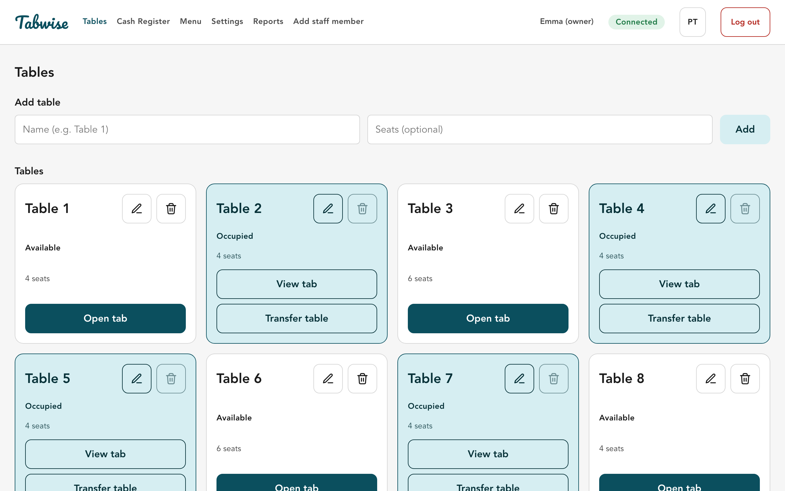
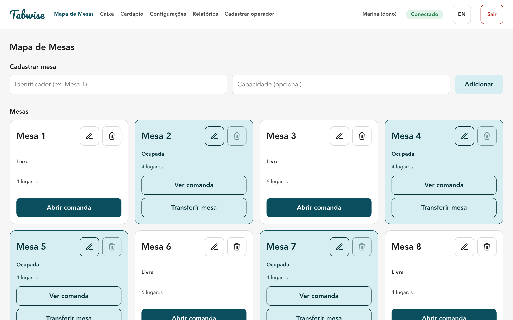

An offline-first point of sale for small bars and restaurants. A personal project, free to download and try, in English and Portuguese. Um ponto de venda offline-first para bares e restaurantes pequenos. Projeto pessoal, gratuito para baixar e experimentar, em português e inglês.
Also available: Windows .msi · all releases Também disponível: Windows .msi · todas as versões


Table map with open, transfer and close tab actions. Walk-in tabs for counter sales.Mapa de mesas com abertura, transferência e fechamento de comandas. Comanda avulsa para o balcão.
Service charge, split bill, change and multiple payment methods.Taxa de serviço, divisão de conta, troco e várias formas de pagamento.
Opening float, pay-ins and pay-outs, end-of-shift count (counted vs. expected).Fundo de troco, sangria e suprimento, conferência no fechamento (contado × esperado).
Sales by period, by staff member and by product (ABC analysis), with CSV export.Vendas por período, por operador e por produto (curva ABC), com exportação CSV.
Owner, cashier and server roles with different permissions, PIN login.Papéis de dono, caixa e garçom com permissões diferentes, login por PIN.
Data is stored locally (SQLite); the app works without a network connection.Os dados ficam salvos localmente (SQLite); o app funciona sem conexão de rede.
Each terminal keeps an append-only event log. Syncing — between terminals on the LAN or with the cloud — means exchanging and merging logs, ordered by a Hybrid Logical Clock, with deterministic conflict resolution. The same sync engine runs on the desktop and on the server. Cada terminal mantém um log de eventos append-only. Sincronizar — entre terminais na LAN ou com a nuvem — é trocar e mesclar logs, ordenados por um Hybrid Logical Clock, com resolução de conflito determinística. O mesmo motor de sync roda no desktop e no servidor.
Tabwise-windows-x64-setup.exe.Tabwise-windows-x64-setup.exe.Tabwise-macos-arm64.dmg and drag Tabwise to Applications.Tabwise-macos-arm64.dmg e arraste o Tabwise para Aplicativos.xattr -cr /Applications/Tabwise.app in Terminal and open it again.xattr -cr /Applications/Tabwise.app no Terminal e abra de novo.